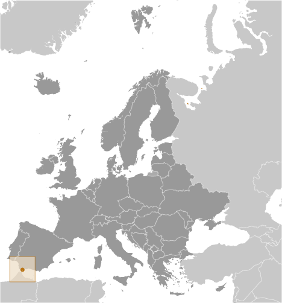
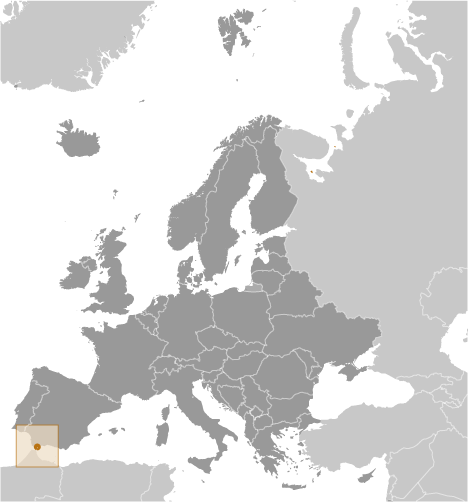

Europe :: GIBRALTAR
Introduction :: GIBRALTAR
-
Strategically important, Gibraltar was reluctantly ceded to Great Britain by Spain in the 1713 Treaty of Utrecht; the British garrison was formally declared a colony in 1830. In a referendum held in 1967, Gibraltarians voted overwhelmingly to remain a British dependency. The subsequent granting of autonomy in 1969 by the UK led Spain to close the border and sever all communication links. Between 1997 and 2002, the UK and Spain held a series of talks on establishing temporary joint sovereignty over Gibraltar. In response to these talks, the Gibraltar Government called a referendum in late 2002 in which the majority of citizens voted overwhelmingly against any sharing of sovereignty with Spain. Since late 2004, Spain, the UK, and Gibraltar have held tripartite talks with the aim of cooperatively resolving problems that affect the local population, and work continues on cooperation agreements in areas such as taxation and financial services; communications and maritime security; policy, legal and customs services; environmental protection; and education and visa services. A new noncolonial constitution came into force in 2007, and the European Court of First Instance recognized Gibraltar's right to regulate its own tax regime in December 2008. The UK retains responsibility for defense, foreign relations, internal security, and financial stability.Spain and the UK continue to spar over the territory. Throughout 2009, a dispute over Gibraltar's claim to territorial waters extending out three miles gave rise to periodic non-violent maritime confrontations between Spanish and UK naval patrols and in 2013, the British reported a record number of entries by Spanish vessels into waters claimed by Gibraltar following a dispute over Gibraltar's creation of an artificial reef in those waters. Spain renewed its demands for an eventual return of Gibraltar to Spanish control after the UK’s June 2016 vote to leave the EU, but London has dismissed any connection between the vote and its future commitment to Gibraltar.
Geography :: GIBRALTAR
-
Southwestern Europe, bordering the Strait of Gibraltar, which links the Mediterranean Sea and the North Atlantic Ocean, on the southern coast of Spain36 08 N, 5 21 WEuropetotal: 6.5 sq kmland: 6.5 sq kmwater: 0 sq kmcountry comparison to the world: 246more than 10 times the size of The National Mall in Washington, D.C.total: 1.2 kmborder countries (1): Spain 1.2 km12 kmterritorial sea: 3 nmMediterranean with mild winters and warm summersa narrow coastal lowland borders the Rock of Gibraltarmean elevation: NAelevation extremes: lowest point: Mediterranean Sea 0 mhighest point: Rock of Gibraltar 426 mnoneagricultural land: 0%arable land 0%; permanent crops 0%; permanent pasture 0%forest: 0%other: 100% (2011 est.)NAoccasional droughts; no streams or large bodies of water on the peninsula (all potable water comes from desalination)limited natural freshwater resources: large concrete or natural rock water catchments collect rainwater (no longer used for drinking water) and adequate desalination plantnote 1: strategic location on Strait of Gibraltar that links the North Atlantic Ocean and Mediterranean Seanote 2: one of only two British territories where traffic drives on the right, the other being the island of Diego Garcia in the British Indian Ocean Territory
People and Society :: GIBRALTAR
-
29,396 (July 2017 est.)country comparison to the world: 218noun: Gibraltarian(s)adjective: GibraltarGibraltarian 79%, other British 13.2%, Spanish 2.1%, Moroccan 1.6%, other EU 2.4%, other 1.6% (2012 est.)English (used in schools and for official purposes), Spanish, Italian, PortugueseRoman Catholic 72.1%, Church of England 7.7%, other Christian 3.8%, Muslim 3.6%, Jewish 2.4%, Hindu 2%, other 1.1%, none 7.1%, unspecified 0.1% (2012 est.)0-14 years: 20.22% (male 3,045/female 2,899)15-24 years: 14.34% (male 2,199/female 2,017)25-54 years: 39.67% (male 5,958/female 5,703)55-64 years: 9.68% (male 1,232/female 1,614)65 years and over: 16.09% (male 2,329/female 2,400) (2017 est.)total: 34.7 yearsmale: 33.8 yearsfemale: 35.7 years (2017 est.)country comparison to the world: 810.23% (2017 est.)country comparison to the world: 18114 births/1,000 population (2017 est.)country comparison to the world: 1398.5 deaths/1,000 population (2017 est.)country comparison to the world: 78-3.3 migrant(s)/1,000 population (2017 est.)country comparison to the world: 179urban population: 100% of total population (2017)rate of urbanization: 0.01% annual rate of change (2015-20 est.)GIBRALTAR (capital) 29,000 (2014)at birth: 1.07 male(s)/female0-14 years: 1.05 male(s)/female15-24 years: 1.1 male(s)/female25-54 years: 1.03 male(s)/female55-64 years: 0.81 male(s)/female65 years and over: 0.97 male(s)/femaletotal population: 1.01 male(s)/female (2016 est.)total: 5.9 deaths/1,000 live birthsmale: 6.6 deaths/1,000 live birthsfemale: 5.2 deaths/1,000 live births (2017 est.)country comparison to the world: 169total population: 79.6 yearsmale: 76.7 yearsfemale: 82.6 years (2017 est.)country comparison to the world: 461.9 children born/woman (2017 est.)country comparison to the world: 136NANANANA
Government :: GIBRALTAR
-
conventional long form: noneconventional short form: Gibraltaretymology: from the Spanish derivation of the Arabic "Jabal Tariq," which means "Mountain of Tariq" and which refers to the Rock of Gibraltaroverseas territory of the UKparliamentary democracy (Parliament); self-governing overseas territory of the UKname: Gibraltargeographic coordinates: 36 08 N, 5 21 Wtime difference: UTC+1 (6 hours ahead of Washington, DC, during Standard Time)daylight saving time: +1hr, begins last Sunday in March; ends last Sunday in Octobernone (overseas territory of the UK)none (overseas territory of the UK)National Day, 10 September (1967); note - day of the national referendum to decide whether to remain with the UK or join Spainhistory: previous 1969; latest passed by referendum 30 November 2006, entered into effect 14 December 2006, entered into force 2 January 2007amendments: proposed by Parliament and require prior consent of the British monarch (through the Secretary of State); passage requires at least three-quarters majority vote in Parliament followed by simple majority vote in a referendum; note – only sections 1 through 15 in Chapter 1 (Protection of Fundamental Rights and Freedoms) can be amended by Parliament (2016)the laws of the UK, where applicable, applysee United Kingdom18 years of age; universal; and British citizens with six months residence or morechief of state: Queen ELIZABETH II (since 6 February 1952); represented by Governor Lt. Gen. Edward DAVIS (since 19 January 2016)head of government: Chief Minister Fabian PICARDO (since 9 December 2011)cabinet: Council of Ministers appointed from among the 17 elected members of Parliament by the governor in consultation with the chief ministerelections/appointments: the monarchy is hereditary; governor appointed by the monarch; following legislative elections, the leader of the majority party or majority coalition usually appointed chief minister by the governordescription: unicameral Parliament (18 seats; 17 members directly elected in a single nationwide constituency by majority vote and 1 appointed by Parliament as speaker; members serve 4-year terms)elections: last held on 26 November 2015 (next to be held not later than December 2019)election results: percent of vote by party - GSLP-Liberal Alliance 68.4% (GSLP 47.8%, LPG 20.6%), GSD 31.6%; seats by party - GSLP-Liberal Alliance 10 (GSLP 7, LPG 3), GSD 7highest resident court(s): Court of Appeal (consists of at least 3 judges, including the court president); Supreme Court of Gibraltar (consists of the chief justice and 3 judges); note - appeals beyond the Court of Appeal are heard by the Judicial Committee of the Privy Council (in London)judge selection and term of office: Court of Appeal and Supreme Court judges appointed by the governor upon the advice of the Judicial Service Commission, a 7-member body of judges and appointees of the governor; tenure of the Court of Appeal president based on terms of appointment; Supreme Court chief justice and judges normally appointed until retirement at age 67 but can be extended 3 yearssubordinate courts: Court of First Instance; Magistrates' Court; specialized tribunals for issues relating to social security, taxes, and employmentGibraltar Liberal Party [Joseph GARCIA]Gibraltar Social Democrats or GSD [Roy CLINTON, interim leader]Gibraltar Socialist Labor Party or GSLP [Fabian PICARDO]GSLP-Liberal Alliance (includes GSLP and LPG)Liberal Party of Gibraltar or LPGProgressive Democratic Party [Nick CRUZ]Chamber of CommerceGibraltar Representatives OrganizationWomen's AssociationICC (NGOs), Interpol (subbureau), UPUnone (overseas territory of the UK)none (overseas territory of the UK)two horizontal bands of white (top, double width) and red with a three-towered red castle in the center of the white band; hanging from the castle gate is a gold key centered in the red band; the design is that of Gibraltar's coat of arms granted on 10 July 1502 by King Ferdinand and Queen Isabella of Spain; the castle symbolizes Gibraltar as a fortress, while the key represents Gibraltar's strategic importance - the key to the MediterraneanBarbary macaque; national colors: red, white, yellowname: "Gibraltar Anthem"lyrics/music: Peter EMBERLEYnote: adopted 1994; serves as a local anthem; as a territory of the United Kingdom, "God Save the Queen" remains official (see United Kingdom)
Economy :: GIBRALTAR
-
Self-sufficient Gibraltar benefits from an extensive shipping trade, offshore banking, and its position as an international conference center. Tax rates are low to attract foreign investment. The British military presence has been sharply reduced and now contributes about 7% to the local economy, compared with 60% in 1984. In recent years, Gibraltar has seen major structural change from a public to a private sector economy, but changes in government spending still have a major impact on the level of employment.The financial sector, tourism (over 11 million visitors in 2012), gaming revenues, shipping services fees, and duties on consumer goods also generate revenue. The financial sector, tourism, and the shipping sector contribute 30%, 30%, and 25%, respectively, of GDP. Telecommunications, e-commerce, and e-gaming account for the remaining 15%.$2.044 billion (2014 est.)$1.85 billion (2013 est.)$2 billion (2012 est.)note: data are in 2014 dollarscountry comparison to the world: 195$2.044 billion (2013 est.)$61,700 (2014 est.)$43,000 (2008 est.)$41,200 (2007 est.)country comparison to the world: 16agriculture: 0%industry: 0%services: 100% (2016 est.)nonetourism, banking and finance, ship repairing, tobaccoNA%24,420 (2014 est.)country comparison to the world: 210agriculture: NEGLindustry: 1.8%services: 98.2% (2014 est.)1% (2016 est.)country comparison to the world: 7NA%lowest 10%: NA%highest 10%: NA%revenues: $475.8 millionexpenditures: $452.3 million (2008 est.)23.3% of GDP (2008 est.)country comparison to the world: 1271.1% of GDP (2008 est.)country comparison to the world: 237.5% of GDP (2008 est.)8.4% of GDP (2006 est.)country comparison to the world: 1991 July - 30 June2.5% (2013 est.)2.2% (2012 est.)country comparison to the world: 132$202.3 million (2014 est.)$271 million (2004 est.)country comparison to the world: 186(principally reexports) petroleum 51%, manufactured goods (2010 est.)Spain 22.5%, Poland 16.7%, Netherlands 15.1%, UK 9.9%, Belgium 8.5%, Cote dIvoire 5%, Lebanon 4.2% (2016)$2.967 billion (2004 est.)country comparison to the world: 142fuels, manufactured goods, foodstuffsUS 22.3%, India 15.2%, Italy 11.2%, Spain 8.6%, Netherlands 7.2%, UK 6.1%, Greece 5.3%, France 4.3% (2016)$NAGibraltar pounds (GIP) per US dollar -0.9214 (2016 est.)0.885 (2015 est.)0.885 (2014 est.)0.7634 (2013 est.)0.64 (2012)
Energy :: GIBRALTAR
-
194.6 million kWh (2015 est.)country comparison to the world: 190188.6 million kWh (2015 est.)country comparison to the world: 1910 kWh (2016 est.)country comparison to the world: 1410 kWh (2016 est.)country comparison to the world: 15443,000 kW (2015 est.)country comparison to the world: 197100% of total installed capacity (2015 est.)country comparison to the world: 70% of total installed capacity (2015 est.)country comparison to the world: 980% of total installed capacity (2015 est.)country comparison to the world: 1770% of total installed capacity (2015 est.)country comparison to the world: 1830 bbl/day (2016 est.)country comparison to the world: 1410 bbl/day (2014 est.)country comparison to the world: 1290 bbl/day (2014 est.)country comparison to the world: 1330 bbl (1 January 2017 es)country comparison to the world: 1400 bbl/day (2014 est.)country comparison to the world: 14970,000 bbl/day (2015 est.)country comparison to the world: 920 bbl/day (2014 est.)country comparison to the world: 15958,300 bbl/day (2014 est.)country comparison to the world: 760 cu m (2013 est.)country comparison to the world: 1400 cu m (2013 est.)country comparison to the world: 1850 cu m (2013 est.)country comparison to the world: 1110 cu m (2013 est.)country comparison to the world: 1300 cu m (1 January 2014 es)country comparison to the world: 1443.6 million Mt (2013 est.)country comparison to the world: 139
Communications :: GIBRALTAR
-
total subscriptions: 17,027subscriptions per 100 inhabitants: 58 (July 2016 est.)country comparison to the world: 179total: 45,714subscriptions per 100 inhabitants: 156 (July 2016 est.)country comparison to the world: 205general assessment: adequate, automatic domestic system and adequate international facilitiesdomestic: automatic exchange facilitiesinternational: country code - 350; radiotelephone; microwave radio relay; satellite earth station - 1 Intelsat (Atlantic Ocean) (2015)Gibraltar Broadcasting Corporation (GBC) provides TV and radio broadcasting services via 1 TV station and 4 radio stations; British Forces Broadcasting Service (BFBS) operates 1 radio station; broadcasts from Spanish radio and TV stations are accessible (2008).gitotal: 27,699percent of population: 94.4% (July 2016 est.)country comparison to the world: 200
Transportation :: GIBRALTAR
-
VP-G (2016)1 (2013)country comparison to the world: 220total: 11,524 to 2,437 m: 1 (2017)total: 29 kmpaved: 29 km (2007)country comparison to the world: 221total: 267by type: bulk carrier 3, cargo 146, chemical tanker 64, container 28, liquefied gas 2, petroleum tanker 14, roll on/roll off 2, vehicle carrier 8foreign-owned: 254 (Belgium 1, Cyprus 1, Denmark 7, Finland 2, Germany 123, Greece 8, Iceland 1, Italy 4, Jersey 1, Morocco 4, Netherlands 34, Norway 46, Sweden 11, UAE 5, UK 6)registered in other countries: 6 (Liberia 5, Panama 1) (2010)country comparison to the world: 32major seaport(s): Gibraltar
Military and Security :: GIBRALTAR
-
Royal Gibraltar Regiment (2013)defense is the responsibility of the UK; the Royal Gibraltar Regiment replaced the last British regular infantry forces in 1992
Transnational Issues :: GIBRALTAR
-
in 2002, Gibraltar residents voted overwhelmingly by referendum to reject any "shared sovereignty" arrangement; the Government of Gibraltar insists on equal participation in talks between the UK and Spain; Spain disapproves of UK plans to grant Gibraltar even greater autonomy